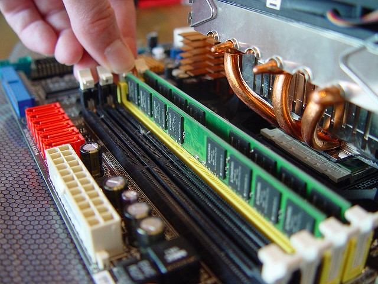

Why Media Players as We Know Them Are Dying Out
There’s no denying that the world around us continues to change and evolve. Technology is already hard enough to keep up, with new inventions and advancements seemingly popping up every single day. As soon as you get your hands on one gadget, they’re already coming out with an even better, more advanced version. The sad reality is that media players as we know them are dying out. Let’s take a closer look at the evolution of media players through the years.
The Evolution of Media Players
Most recently, media players have been merged with other gadgets like phones, tablets, and computers, but before that they were very much a stand-alone product. In fact, portable media players were the go-to gadget for just about everyone. In fact, portable media players as we know them really hit the market in the 60’s with the cassette tape players. Philips introduced the audio cassette tape format and in 1979 the Walkman portable audio cassette player became the must-have gadget for anyone interested in music. It was first called the “Soundabout.”
It was in 1983 that Sony introduced compact discs then the portable CD player in 1984, further advancing how we listened to music and media. It wasn’t until 1998 that the first MP3 player was introduced, but this time it was created by the Korean company SaeHan. The device was called the MPMan.
In 2001, Apple introduced their first-ever iPod which consisted of 5 or 10 GB, a mechanical scroll wheel, and a rechargeable battery pack. The introduction of iTunes in and the iTunes Store in 2003 suddenly made it easy to purchase legal music downloads for just 99 cents a song.
By 2004, Apple introduced the iPod Classic 2 that utilized sensitive controls and in 2007 the iPod Touch was introduced. The iPod touch forever changed the world of media players with the large display and touch-screen interface. Along with it, iTunes continued to dominate the industry when it came to actually getting music onto a music device.
But since 2004, the evolution of media players has hit somewhat of a dead end, with the tech world turning its attention more toward multi-use gadgets like phones and tablets. Additionally, steaming music programs like Spotify and Pandora allow users to download and listen to music for a much lower cost, which begs some to wonder whether media players will even be needed or wanted in the future.
Are Media Players Dying Out?
In 2012, Microsoft openly shared that its Media Center would not be babe part of “the future of entertainment in Windows.” While entertainment was upgraded, there’s no doubt that making its Media Center an extra-cost option was a sign of times to come.
That being said, perhaps media players as we know it are dying out, but only to make way for the new way consumers download, listen to, and enjoy music and entertainment. The companies driving the growth of the new world of media are Apple, Roku, Amazon, and Google.
There’s no denying that social media also plays a big role in the ever-evolving world of media. There’s a good chance you’ve heard about a song or seen a video on a social media platform sometime recently, because it’s becoming more and more common. Perhaps it’s the interaction that users love to enjoy, or perhaps it’s the familiarity of the social media site they’re already used to navigating.
Familiarity, no doubt, comes into play when discussing media players. It’s easy to say that once someone becomes familiar with a specific technology, especially those above a certain age group, chances are they wouldn’t want to take the time to re-learn another form of technology that can do the same thing as the program they were already familiar with. For example, if you’ve been using an iPhone for over a decade, you’re far less motivated to switch to a Windows phone and learn a brand new interface just to text and make phone calls. The same goes for media players.
That being said, that’s precisely a motivating factor that drives media companies to continue to update their products. In order to stay current, they have to be sure their gadgets include the latest and greatest upgrades.
Conclusion
Now, phones and even TVs include Wi-Fi and entertainment centers all their own. Unless you’re still carrying out your old flip phone from the early 2000’s, chances are you have everything you need in terms of media in the palm of your hand already, so why spend more on an extra device? That’s what many people now believe, so perhaps it’s up to you to decide for yourself.
If you’re desperate to hold onto your beloved media player so you can keep it for years to come, you can also contact this technical support company to be sure you’re taking proper care of your favorite device.